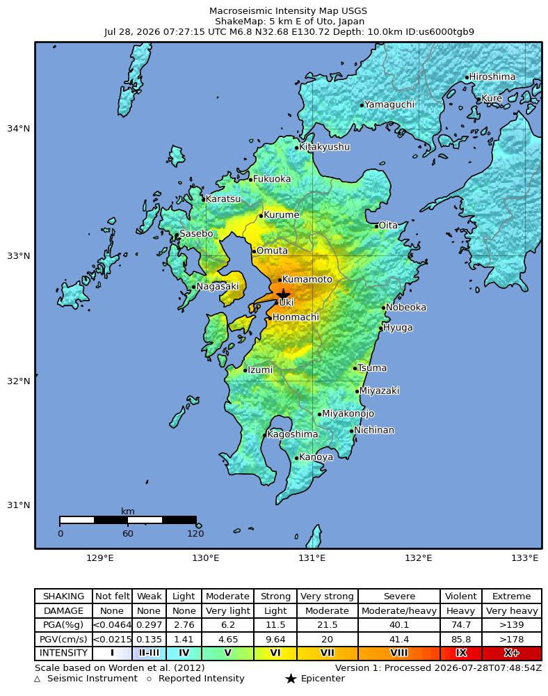

us6000tgb9| Origin time (UTC) | 2026-07-28 07:27:15 UTC |
|---|---|
| Latitude | 32.6817° |
| Longitude | 130.7217° |
| Depth | 10.0 km |
| Mw (preferred) | 6.8 (mww) |
| Region | 5 km E of Uto, Japan |
| USGS page | https://earthquake.usgs.gov/earthquakes/eventpage/us6000tgb9 |
| Mww | 6.8 |
|---|---|
| Scalar moment (N·m) | 1.73E+19 |
| NP1 (strike/dip/rake) | 212.45° / 75.07° / -163.76° |
| NP2 (strike/dip/rake) | 118.16° / 74.32° / -15.52° |

This event passes Quakesight monitoring criteria (M ≥ 5.0, depth ≤ 50 km, land epicenter). The monitor will track Sentinel-1 acquisitions and trigger InSAR processing once post-event scenes appear on ASF DAAC.
Auto-generated at 2026-07-28T08:05:06Z from USGS feeds.